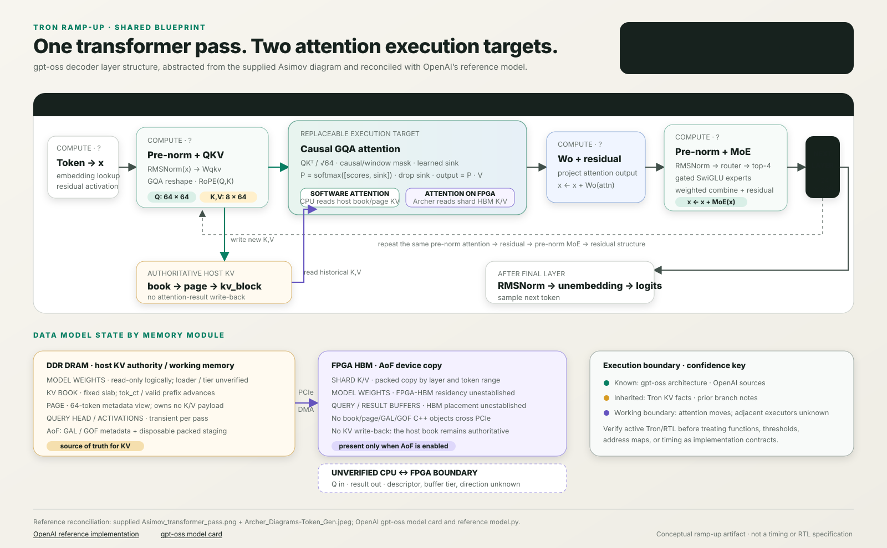

Same transformer math, a wider attention data path.
RMSNorm, Q/K/V projection, RoPE, output projection, residuals, and MoE remain on the common pipeline. AoF adds a hardware-formatted K/V representation and moves the causal attention kernel across the Archer boundary.
{kind=link}

AoF execution seam
Common model compute still creates Q, K, and V; host writers update the authoritative book. Packed K/V plus a transient query payload feed Archer; the returned attention activation rejoins Wo.
Do not overextend the boundary
The supplied evidence establishes FPGA attention and HBM K/V, not model-weight residency, Q-buffer transport, every projection’s executor, or end-to-end gpt-oss support.
Follow the bytes across CPU, DMA, HBM, and FPGA.
Select a phase to highlight all actors participating in that causal moment. Horizontal placement means “happens before,†not measured duration; packing, DMA, and other work may overlap in a real scheduler.
USE_HW_ATTN + gatesgof::save_count == 8gof_rodeo and job metadata.mark_k_complete / mark_v_completepopulate()Gather + swizzle four positions.free_staging_if_idlexfer() → H2D copyDMA writes shard HBM.C = logical create/allocate, R = read/consume, U = update/copy, D = reclaim/delete, ? = exact active-branch implementation or transport is not established. DMA materializes bytes; it does not create or own C++ books, GALs, or GOFs.
Shape compatibility is not deployment proof.
gpt-oss has 8 KV heads and D64, which match the inherited shape gate, but model entry, masks, sinks, query transport, numerical parity, and current RTL support still need verification.
A parallel representation, not a replacement.
The C++ hierarchy remains in host memory. Only packed K/V bytes cross PCIe. GAL source accessors point back to authoritative book/page slots, which can span a page, book, or ancestor-edge boundary.
Host DDR · authority + staging
CPU ownedFPGA HBM + Archer
derived copy
Ownership invariant: the FPGA does not receive book,
page, GAL, or GOF objects. Attention consumes a derived
HBM K/V copy. Its result does not update either host or device K/V.
Logical objects and physical actors have different lifetimes.
A CPU function may create metadata, the CPU may pack bytes, DMA may copy those bytes, and FPGA logic may read them—without DMA or FPGA compute owning the logical object.
| Data model | Lifecycle | Tron function / semantic action | System actor + location | State effect / reclaim | Confidence |
|---|---|---|---|---|---|
| Model weights | CRD | Load/read/unload — exact Tron symbols and residency unknown. | Model executor; current evidence does not establish FPGA-HBM weights. | Expected read-only during inference. | Needs code verification |
| book / page / kv_block | CRUD | compute_forward_args; save_k/save_v; mark-complete accessors. Alloc/evict symbols unknown. |
Scheduler and CPU producers; host DDR. | Always authoritative; released by token-tree ownership policy, not by AoF completion. | Prior source audit |
| GAL | CRUD | Query-driven creation on edge.gals[]; exact creator/destructor symbols unknown. |
CPU metadata in host memory. | Four position backreferences + one GOF per HW layer; expected to follow edge lifetime. | Prior source audit |
| GOF | CRUD | gof::save_count; threshold triggers gof_rodeo; object destructor unknown. |
CPU atomics/control in host memory. | Four positions × one layer; object lifetime tied to GAL/edge. | Prior source audit |
| GOF staging pair | CRUD | populate() reacquires/packs; free_staging_if_idle after dma_inflight == 0. |
CPU gather/swizzle in DMA-visible host memory. | Reconstructable 8 KiB K + 8 KiB V; can be rebuilt from book. | Branch-specific audit |
| Shard HBM K/V | C?RUD? | Shard allocation/release symbols unknown; xfer() supplies/targets the copy. |
Host control + PCIe DMA writes; FPGA fetchers read. | Derived device-resident copy; exact persistence, overwrite, and reclaim rules unknown. | Copy path inherited |
| Query head Q | CRU?D? | Q projection + RoPE; AoF descriptor/buffer and submission symbols unknown. | Model executor creates; transport moves/references; FPGA consumes. | Ephemeral activation, never part of GAL/GOF or persistent K/V. | Target boundary |
| Attention result | CRUD? | FPGA operation → return/unpack/join; exact symbols and buffer type unknown. | FPGA creates device output; return path updates host/common activation. | No K/V write-back; buffer reuse/reclaim unknown. | Target boundary |
gpt-oss looks shape-compatible. That is the start, not the answer.
The prior branch audit reports a fixed shape gate. gpt-oss happens to match those dimensions, but end-to-end correctness still depends on attention semantics, host descriptors, HBM layout, current firmware/RTL, and numerical parity.
Inherited shape gate
head_size ∈ {64, 128}
n_kv_heads ≤ 8
gpt-oss official shape: D64 + 8 KV heads. This appears to satisfy the inherited geometry gate, but no active Tron model entry or current bitstream was inspected. “Shape-compatible†must not be shortened to “supported.â€
Required proof before enabling
- Map all 64 gpt-oss query heads onto 8 KV heads and the card’s fixed slot semantics.
- Implement/verify alternating full and window-128 causality exactly.
- Reproduce learned attention-sink behavior and softmax numerics.
- Verify Q payload descriptor, transport, ordering, and result-buffer contract.
- Verify GOF packing, HBM addresses, shard replication, and failure cleanup.
- Compare FPGA and software attention across boundary positions, long contexts, and both model sizes.
What AoF changes—and what it must preserve.
The two pages use the same names so the placement delta stays explicit.
The boundary to verify in code and on hardware.
These unknowns are deliberately visible because they change correctness, ownership, failure recovery, or performance.
- Active-branch gpt-oss model entry, layer eligibility, runtime offload gate, and software fallback behavior.
- Exact GAL/GOF creator and teardown calls; exact edge ownership when queries branch or merge.
- Shard HBM allocator/reclaimer, multiple-FPGA replication, overwrite policy, and eviction coupling.
- Query vector transport, descriptor, buffer placement, DMA direction, ordering, and backpressure.
- Attention result buffer type, return transport, unpack/join function, and failure cleanup.
- Whether any model weights reside in FPGA HBM; current evidence only establishes AoF K/V there.
- Real overlap, queueing, latency, and bandwidth. The wall-clock diagram is intentionally not to scale.
- OpenAI primary sources: gpt-oss model card and reference model.py.
- Local inputs: Asimov pipeline and Archer token generation.
- Prior audit, GAL/GOF:
h/tron/gof.hpp:33–67, 140–285;h/tron/scheduler/full.hpp:1905–2005. - Prior audit, staging/head slots:
h/pos/config.hpp:90–95;h/pos/hwattention.hpp:104–183;src/tron/gof.cpp:84–112. - Prior audit, reclamation tests:
t/t_dma_tracker.cpp:444–462, 533–551;t/t_gof_dma.cpp:190–368. - Baseline page: compare with software attention.
{kind=link}
{kind=link}